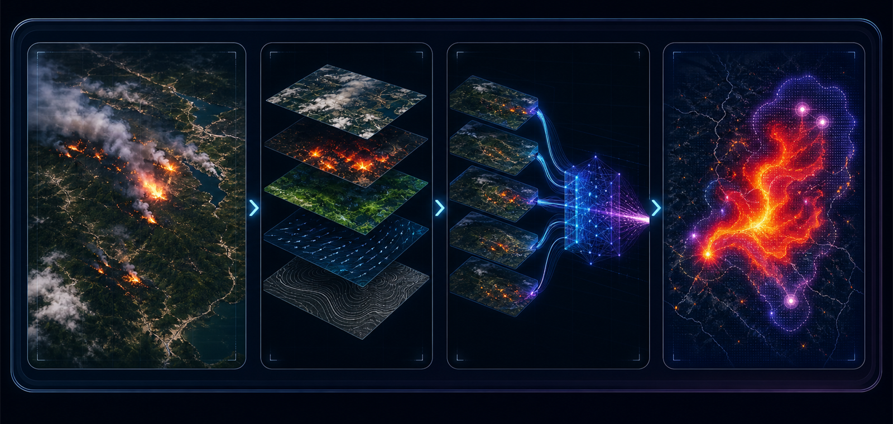

如何同时预测山火“在哪里”和“会往哪里走”？
研究中需要把活跃火点、烧毁区和次日蔓延建模为相关任务，而不是只做单一二分类或静态分割。
研究一个多源遥感时空融合框架，将活跃火点检测、烧毁区域识别和次日山火蔓延预测统一到多任务学习中，为灾害预警、资源调度和风险解释提供技术支持。

山火预测的价值不只在于识别已经燃烧的区域，更在于提前判断风险会向哪里扩散，并解释哪些环境因素驱动了模型判断。
这个方向连接遥感、气候、灾害响应和多模态 AI。它的数据来源丰富，实验设计清晰，也天然具备 social impact 叙事。
研究中需要把活跃火点、烧毁区和次日蔓延建模为相关任务，而不是只做单一二分类或静态分割。
可以融合卫星反射率、热异常、气象、地形、植被和燃料变量，并引入风向、坡度等物理先验提升预测合理性。
包括多任务 baseline、次日蔓延概率图、lead-time recall、AUPRC、关键风险因子可视化和 conference-style paper。
该课题强调多源数据融合和多任务输出，避免只做单一火点检测。
TS-SatFire、Next Day Wildfire Spread、FIRMS、MODIS / VIIRS、WildfireSpreadTS 等遥感和环境变量。
使用 ConvLSTM、Temporal U-Net、UTAE 或时空 Transformer 融合历史多日观测。
显式加入风速、风向、坡度、植被含水量、燃料类型和干旱指数等传播因素。
活跃火点概率、烧毁区 mask、次日新增燃烧概率、风险校准和关键因素解释图。
实际应急场景不仅关心哪里已经着火，还关心未来一天或数天火势可能扩展到哪里、模型是否校准、风险因子是否可解释。
本课题把火点检测、烧毁区制图和蔓延预测统一为多任务学习问题，用时序信息和物理先验提升预测可信度。
成果由可运行代码、风险可视化、系统对比实验和 conference-style paper 组成。
研究过程按由浅到深推进，每个阶段都对应可检查的中间产物。
理解火点、烧毁区、蔓延标签、天气地形变量和类别极不平衡问题。
复现 Random Forest、U-Net、DeepLabV3+ 或 ConvLSTM，建立火点和蔓延预测基线。
加入气象、地形、植被、燃料和历史多日输入，比较单源与多源的增益。
联合预测火点、烧毁区和蔓延概率，并注入风向、坡度等传播先验。
完成跨年份、跨区域、极端天气场景测试和可解释性分析。
技术部分围绕多源编码、时序融合、类别不平衡和风险解释展开。
分别编码光学遥感、热异常、植被指数、天气、地形和燃料变量，再进行跨模态融合。
利用历史多日火情与环境变化预测次日新增燃烧区域，强调 lead time 和风险概率校准。
把风向、坡度和燃料条件纳入模型，并用 SHAP、Grad-CAM 或 attention 可视化解释风险来源。
山火区域通常稀疏，评价不能只看 Accuracy，需要重点关注召回、精确率、概率校准和提前预测能力。
| 指标 / 观察项 | 技术含义 | 直观解释 |
|---|---|---|
| Precision / Recall | 火区预测中的误报和漏报。 | 模型是否既能找到真实火区，又不会把大量安全区域误判为高风险。 |
| F1 / IoU | 预测区域与真实火点或烧毁区的重叠程度。 | 预测出的山火区域是否位置合理、边界接近真实范围。 |
| AUPRC | 类别极不平衡场景下的关键排序指标。 | 在火区很少的情况下，模型是否仍能把真正危险区域排在前面。 |
| Lead-time Recall | 提前一天或多天预测真实蔓延区域的召回率。 | 模型是否能提前发现即将扩散的风险，而不是事后才识别火区。 |
| Calibration Error | 预测概率与真实发生频率是否匹配。 | 标成 80% 风险的区域是否真的大约有 80% 概率发生火情。 |
| Cross-region Performance | 跨年份、跨区域、跨生态区泛化能力。 | 方法是否能迁移到新地区和极端天气场景，而不是只记住训练区域。 |
这些数据集覆盖多源遥感、次日蔓延预测、近实时火点和多日时序建模。
表面反射率、天气、地形、土地覆盖和燃料等多源数据，可作为主实验。 数据页
面向次日山火蔓延预测的标准机器学习数据集。 数据页
FIRMS 可辅助火点标签构造，WildfireSpreadTS 可用于多日蔓延建模。 FIRMS · WildfireSpreadTS
上方生成图用于保持页面视觉一致；数据页来自公开数据集或项目页面，实际实验需按各数据集许可和使用条款执行。